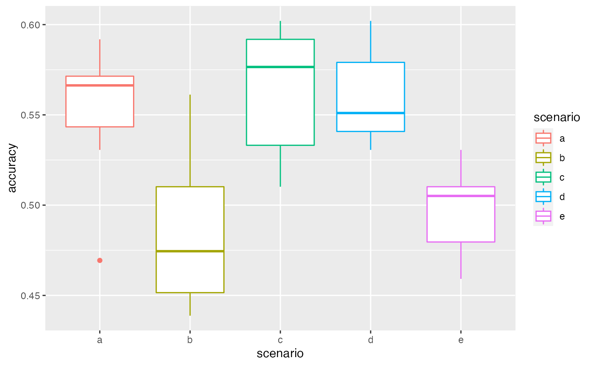
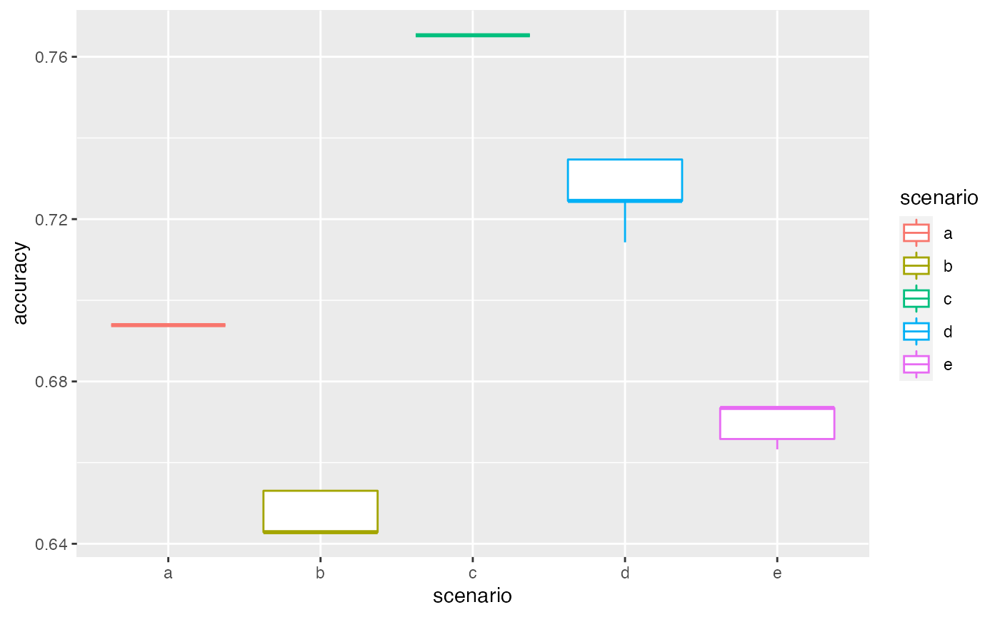
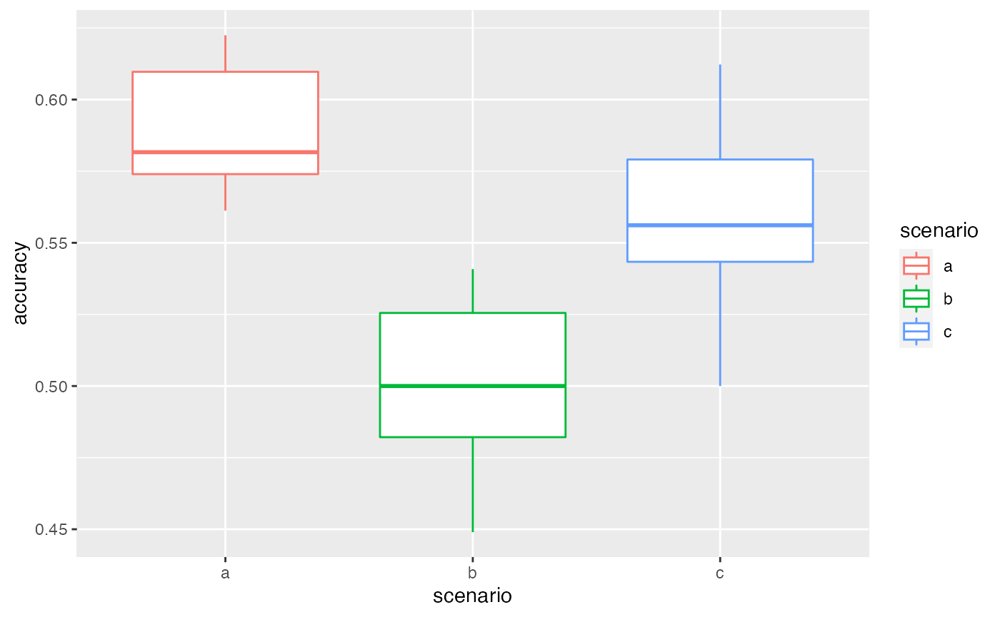

Introduction to vernabota
vernabota.RmdThis document describes the methods and use of the package vernabota to gapfill missing botanical names using vernacular names, in the case of Guyafor census data. The objective is to obtain a chosen number of simulated communities for which individuals only identified with a vernacular name are given a botanical name based on probabilities of association of vernacular and botanical names. It is largely based on the work and codes from Aubry-Kientz et al. (2013) and Mirabel (2018).
The models are described here.
We set a seed for reproducibility.
set.seed(56)Some of the examples below require the package data.table.
Preparing the data
Data that we want to gapfill
This algorithm works on a dataset formatted as it is when obtained using the function EcoFoG::Guyafor2df or from the online data plateform of Paracou.
There can be several censuses for a same plot (i.e. several lines per individual trees).
Here, we take the example of data from plot 6, census of 2016, and use subplot 1 as the dataset that we want to gapfill. We call this dataset Data2fill.
In this dataset, the column VernName should not contain any special character such as é, è or œ (data from the Guyafor database should not have these special characters).
We use the function PrepData to prepare the data.
library(vernabota)
#> Warning in register(): Can't find generic `scale_type` in package ggplot2 to
#> register S3 method.
data(Paracou6_2016)
Data2fill <- Paracou6_2016[Paracou6_2016$SubPlot==1,]
Data2fill <- PrepData(Data2fill)
str(Data2fill)
#> Classes 'data.table' and 'data.frame': 976 obs. of 26 variables:
#> $ Forest : chr "Paracou" "Paracou" "Paracou" "Paracou" ...
#> $ Plot : int 6 6 6 6 6 6 6 6 6 6 ...
#> $ PlotArea : num 6.25 6.25 6.25 6.25 6.25 6.25 6.25 6.25 6.25 6.25 ...
#> $ SubPlot : int 1 1 1 1 1 1 1 1 1 1 ...
#> $ idTree : Factor w/ 976 levels "100621","100622",..: 1 2 3 4 5 6 7 8 9 10 ...
#> $ Xfield : num 23 28.5 14 9.5 10 5 5 3.5 5 8.5 ...
#> $ Yfield : num 236 248 210 126 128 ...
#> $ Xutm : num 286421 286423 286418 286435 286435 ...
#> $ Yutm : num 583171 583185 583144 583062 583063 ...
#> $ Lat : num 5.27 5.27 5.27 5.27 5.27 ...
#> $ Lon : num -52.9 -52.9 -52.9 -52.9 -52.9 ...
#> $ Family : chr "Euphorbiaceae" "Arecaceae" "Sapotaceae" "Humiriaceae" ...
#> $ Genus : chr "Sandwithia" "Oenocarpus" "Micropholis" "Sacoglottis" ...
#> $ Species : chr "guyanensis" "bataua" "guyanensis" "guianensis" ...
#> $ BotaSource : chr "Bota" "Bota" "Bota" "Bota" ...
#> $ BotaCertainty : Factor w/ 6 levels "-1","0","1","2",..: 6 6 6 6 6 6 6 5 6 6 ...
#> $ VernName : Factor w/ 110 levels "-","acacia franc",..: 102 79 14 91 18 97 14 86 75 70 ...
#> $ CensusYear : int 2016 2016 2016 2016 2016 2016 2016 2016 2016 2016 ...
#> $ CensusDate : chr "2016-09-14" "2016-09-14" "2016-09-14" "2016-09-14" ...
#> $ CensusDateCertainty: int 1 1 1 1 1 1 1 1 1 1 ...
#> $ CodeAlive : int 1 1 1 1 1 1 1 1 1 0 ...
#> $ MeasCode : int 0 0 0 0 0 0 0 0 0 0 ...
#> $ Circ : num 42 59.5 74 132.5 46 ...
#> $ CircCorr : num 42 59.5 74 132.5 46 ...
#> $ CorrCode : chr "0" "0" "0" "0" ...
#> $ GenSp : Factor w/ 188 levels "Abarema-jupunba",..: 148 116 107 147 169 186 128 74 117 88 ...
#> - attr(*, ".internal.selfref")=<externalptr>
#> - attr(*, "index")= int(0)
#> ..- attr(*, "__BotaSource")= int [1:976] 1 2 3 4 5 6 7 8 9 10 ...Prior: expert knowledge on possible associations
The prior is a data.frame with vernacular names in columns and botanical names in rows (given in 3 column Family, Genus and Species. For a given vernacular name and a given botanical name, the value is 1 if the association is possible, according to expert knowledge, and 0 if not.
We propose three prior files resulting from the work of Jean-Maurice MadKau Madkaud (2012), updated using the code 5_Dev/Prior_Verna_Bota_Name_Cleaning/Prior_Verna_Bota_Name_Cleaning.Rmd in January 2022.
data(PriorAllFG_20220126)
PriorAllFG <- PriorAllFG_20220126
str(PriorAllFG[,1:10])
#> 'data.frame': 1657 obs. of 10 variables:
#> $ Family : chr "Fabaceae" "Chrysobalanaceae" "Melastomataceae" "Opiliaceae" ...
#> $ Genus : chr "Abarema" "Acioa" "Aciotis" "Agonandra" ...
#> $ Species : chr "jupunba" "guianensis" "purpurascens" "silvatica" ...
#> $ PresentInGuyaFor: logi TRUE FALSE FALSE TRUE TRUE FALSE ...
#> $ acacia franc : num 0 0 0 0 0 0 0 0 0 0 ...
#> $ acajou de guyane: num 0 0 0 0 0 0 0 0 0 0 ...
#> $ adugue : num 0 0 0 0 0 0 0 0 0 0 ...
#> $ aganananga : num 0 0 0 0 0 0 0 0 0 0 ...
#> $ aganiamai : num 0 0 0 0 0 0 0 0 0 0 ...
#> $ agui : num 0 0 0 0 0 0 0 0 0 0 ...
data(PriorParacouNew_20220126)
PriorParacouNew <- PriorParacouNew_20220126
# str(PriorParacouNew[,1:10])
# data(PriorParacouOld_20220126)
# PriorParacouOld <- PriorParacouOld_20220126
# str(PriorParacouOld[,1:10])We use the function PrepPrior to prepare the prior. Here we use the default settings because we want to remove the botanical names with non-determined species, and the botanical names not in Guyafor from the prior. The reason is that these names would always lead to incorrect association when using the CompareSim function (see below). However, one may decide to keep them, this would lead to
possible associations with a botanical name of the form Genus-Indet. with a BotaCodeCor=“AssoByGenus” or “AssoByFam” (with RemoveIndetSp==TRUE) .
possible associations with a botanical name that has never been observed in Guyafor (with RemoveNotGuyafor==TRUE).
In these latter cases, only the prior information would be used.
PriorAllFG <- PrepPrior(PriorAllFG)
str(PriorAllFG[,1:10])
#> Classes 'data.table' and 'data.frame': 681 obs. of 10 variables:
#> $ Family : chr "Fabaceae" "Opiliaceae" "Lauraceae" "Lauraceae" ...
#> $ Genus : chr "Abarema" "Agonandra" "Aiouea" "Aiouea" ...
#> $ Species : chr "jupunba" "silvatica" "guianensis" "laevis" ...
#> $ acacia franc : num 0 0 0 0 0 0 0 0 0 0 ...
#> $ acajou de guyane: num 0 0 0 0 0 0 0 0 0 0 ...
#> $ adugue : num 0 0 0 0 0 0 0 0 0 0 ...
#> $ aganananga : num 0 0 0 0 0 0 0 0 0 0 ...
#> $ aganiamai : num 0 0 0 0 0 0 0 0 0 0 ...
#> $ agui : num 0 0 0 0 0 0 0 0 0 0 ...
#> $ agusiton : num 0 0 0 0 0 0 0 0 0 0 ...
#> - attr(*, ".internal.selfref")=<externalptr>
PriorParacouNew <- PrepPrior(PriorParacouNew)
# str(PriorParacouNew[,1:10])
#
# PriorParacouOld <- PrepPrior(PriorParacouOld)
# str(PriorParacouOld[,1:10])Observation data to update the prior
To built the matrix of association between vernacular and scientific names, we can either use the same dataset than the one for which we want to perform the association or another dataset. The user needs to carefully think this choice through. Using the same dataset can lead to underestimating diversity as it consider that there cannot be any dispersal of species from outside. Using a too wide data set could lead to associating species that are not present in the area.
There can be several censuses for a same plot (i.e. several lines per individual trees).
In this dataset, the column VernName should not contain any special character such as é, è or œ (data from the Guyafor database should not have these special characters).
Here, we use data from plot 6 (all four subplots), census of 2016. We call this dataset DataAsso.
We use the function PrepData to prepare the data.
DataAsso <- Paracou6_2016
DataAsso <- PrepData(DataAsso)
str(DataAsso)
#> Classes 'data.table' and 'data.frame': 3620 obs. of 26 variables:
#> $ Forest : chr "Paracou" "Paracou" "Paracou" "Paracou" ...
#> $ Plot : int 6 6 6 6 6 6 6 6 6 6 ...
#> $ PlotArea : num 6.25 6.25 6.25 6.25 6.25 6.25 6.25 6.25 6.25 6.25 ...
#> $ SubPlot : int 1 1 1 1 1 1 1 1 1 1 ...
#> $ idTree : Factor w/ 3620 levels "100621","100622",..: 1 2 3 4 5 6 7 8 9 10 ...
#> $ Xfield : num 23 28.5 14 9.5 10 5 5 3.5 5 8.5 ...
#> $ Yfield : num 236 248 210 126 128 ...
#> $ Xutm : num 286421 286423 286418 286435 286435 ...
#> $ Yutm : num 583171 583185 583144 583062 583063 ...
#> $ Lat : num 5.27 5.27 5.27 5.27 5.27 ...
#> $ Lon : num -52.9 -52.9 -52.9 -52.9 -52.9 ...
#> $ Family : chr "Euphorbiaceae" "Arecaceae" "Sapotaceae" "Humiriaceae" ...
#> $ Genus : chr "Sandwithia" "Oenocarpus" "Micropholis" "Sacoglottis" ...
#> $ Species : chr "guyanensis" "bataua" "guyanensis" "guianensis" ...
#> $ BotaSource : chr "Bota" "Bota" "Bota" "Bota" ...
#> $ BotaCertainty : Factor w/ 6 levels "-1","0","1","2",..: 6 6 6 6 6 6 6 5 6 6 ...
#> $ VernName : Factor w/ 156 levels "-","acacia franc",..: 146 112 23 131 29 138 23 123 105 100 ...
#> $ CensusYear : int 2016 2016 2016 2016 2016 2016 2016 2016 2016 2016 ...
#> $ CensusDate : chr "2016-09-14" "2016-09-14" "2016-09-14" "2016-09-14" ...
#> $ CensusDateCertainty: int 1 1 1 1 1 1 1 1 1 1 ...
#> $ CodeAlive : int 1 1 1 1 1 1 1 1 1 0 ...
#> $ MeasCode : int 0 0 0 0 0 0 0 0 0 0 ...
#> $ Circ : num 42 59.5 74 132.5 46 ...
#> $ CircCorr : num 42 59.5 74 132.5 46 ...
#> $ CorrCode : chr "0" "0" "0" "0" ...
#> $ GenSp : Factor w/ 321 levels "Abarema-jupunba",..: 253 193 175 251 289 316 215 118 195 142 ...
#> - attr(*, ".internal.selfref")=<externalptr>
#> - attr(*, "index")= int(0)
#> ..- attr(*, "__BotaSource")= int [1:3620] 1 2 3 4 5 6 7 8 9 10 ...Running some simmulations using the function SimFullCom
NB: for these examples, a low number of simulations is used. For real tests, a higher number of simulations should be performed.
The SimFullCom function returns the original dataset with two additional columns:
GensSpCor: The Genus and species after gap filling
BotaCorCode : the type of correction (see section Possible types of gapfilling in this vignette, and the help of the SimFullCom function).
In cases where the original data contained several censuses of a same plots (i.e. several lines per individual trees), the output keeps the several censuses. For a given simulations, all observations of a same tree have the same botanical names associated.
Example 1: using the same dataset for Data2fill and DataAsso, without prior
DataNSim <- SimFullCom(Data2fill, NSim=2, eps=0.01)
str(DataNSim, max.level = 1)
#> List of 2
#> $ :Classes 'data.table' and 'data.frame': 976 obs. of 28 variables:
#> ..- attr(*, ".internal.selfref")=<externalptr>
#> ..- attr(*, "sorted")= chr "idTree"
#> $ :Classes 'data.table' and 'data.frame': 976 obs. of 28 variables:
#> ..- attr(*, ".internal.selfref")=<externalptr>
#> ..- attr(*, "sorted")= chr "idTree"
colnames(DataNSim[[1]])
#> [1] "idTree" "Forest" "Plot"
#> [4] "PlotArea" "SubPlot" "Xfield"
#> [7] "Yfield" "Xutm" "Yutm"
#> [10] "Lat" "Lon" "Family"
#> [13] "Genus" "Species" "BotaSource"
#> [16] "BotaCertainty" "VernName" "CensusYear"
#> [19] "CensusDate" "CensusDateCertainty" "CodeAlive"
#> [22] "MeasCode" "Circ" "CircCorr"
#> [25] "CorrCode" "GenSp" "GensSpCor"
#> [28] "BotaCorCode"
table(DataNSim[[1]]$BotaCorCode)
#>
#> fullyDet Det2Genus NoCor AssoByFam AssoByVern Det2Fam
#> 953 2 1 2 11 1
#> AssoByGenus
#> 6Example 2: using different dataset for Data2fill and DataAsso, with a prior (different weighing of the prior and the observations)
Here we have a weigth of 0.2 for the prior and of 0.8 for the observations.
DataNSim <- SimFullCom(Data2fill=Data2fill, DataAsso=DataAsso,
prior=PriorAllFG, wp=0.2, NSim=2, eps=0.01)
#str(DataNSim, max.level = 1)
#colnames(DataNSim[[1]])
table(DataNSim[[1]]$BotaCorCode)
#>
#> fullyDet AssoByFam AssoByVern Det2Fam Det2Genus AssoByGenus
#> 953 2 12 1 1 7Example 3: getting the more likely associations (using Determ=TRUE)
As we want to simulate the more likely associations, we set NSim to 1.
DataNSim <- SimFullCom(Data2fill=Data2fill, DataAsso=DataAsso,
prior=PriorAllFG, wp=0.2, NSim=1, eps=0.01, Determ=TRUE)
#str(DataNSim, max.level = 1)
#colnames(DataNSim[[1]])
table(DataNSim[[1]]$BotaCorCode)
#>
#> fullyDet AssoByFamDeterm AssoByVernDeterm Det2Fam
#> 953 2 12 1
#> Det2Genus AssoByGenusDeterm
#> 1 7Comparing different settings for the simulations using the function CompareSim
NB: for these examples, a low number of simulations is used. For real tests, a higher number of simulations should be performed.
Comparing different settings
The choice of the settings used for the gapfilling is important for the quality of the estimation. It is specific to the study and the dataset of the user, so it is interesting to compare different settings and to choose the one that performs the best:
choice of observation data (DataAsso): Using the same dataset (or a dataset to limited in its size or spatial extent) can lead to underestimating diversity as it underestimate the
dispersal of species from outside. Using a too wide data set could lead to associating species that are not present in the area.the choice of the prior data depends on the team that has performed the vernacular identification and on the spatial extent of the data to gapfill and of the prior.
the relative weights given to the prior and the observation depends on the quantity and quality of information brought by the prior and the observation.
the effect of the value of \(\epsilon\) can also be tested.
the overall percentatge of trees used for testing (pc2fill) can also be tested.
the percentage of trees that we consider determined to the family (pcFamilyDet) or to the genus (pcGenusDet) should logically be chosen to be similar to these in the data set we want to gapfill (but this can also be changed).
For this, we use the function CompareSim. This function “masks” the identification of the trees fully identified and test if it can be successfully retreived with the setting chosen. The proportion of correct association is called accuracy.
We first create lists for the data to gapfill, the priors and the observation data
that we want to test:
D2fill <- list(Data2fill) # data to gapfill
priors <- list(PriorAllFG, PriorParacouNew) # priors
DAsso <- list(NULL, DataAsso) # observation dataThen we create the Param data.frame to explicit the different scenarios to test:
Param <- data.frame(priors = c(1,1,2,1,1), # here, we used the first prior
# of the list for scenario 1, 2, 4 and 5 and the seccond for scenario 3
dataFill = c(1,1,1,1,1),
dataAsso = c(2,1,2,2,2), # for the second scenario dataAsso is NULL (the data to gapfill are used)
weights = c(0.5,0.5,0.5,0.2,0.8),
NbSim = c(10,10,10,10,10),
pc2fill = c(10,10,10,10,10),
pcFamilyDet = c(25,25,25,25,25),
pcGenusDet = c(25,25,25,25,25),
eps = c(0.01,0.01,0.01,0.01,0.01),
Determ = c(FALSE,FALSE,FALSE,FALSE,FALSE),
Results_Simulations = c(FALSE,FALSE,FALSE,FALSE,FALSE))
Param
#> priors dataFill dataAsso weights NbSim pc2fill pcFamilyDet pcGenusDet eps
#> 1 1 1 2 0.5 10 10 25 25 0.01
#> 2 1 1 1 0.5 10 10 25 25 0.01
#> 3 2 1 2 0.5 10 10 25 25 0.01
#> 4 1 1 2 0.2 10 10 25 25 0.01
#> 5 1 1 2 0.8 10 10 25 25 0.01
#> Determ Results_Simulations
#> 1 FALSE FALSE
#> 2 FALSE FALSE
#> 3 FALSE FALSE
#> 4 FALSE FALSE
#> 5 FALSE FALSEWe can then run CompareSim, visualise the scenarios and their results using summary and plot their accuracy using plot.
VBS_test <- CompareSim(Param = Param ,
priors = priors, D2fill = D2fill, DAsso = DAsso)
summary(VBS_test)
#> scenario a
#> 10 repetition(s) with priors nb 1 , Data2Fill nb 1 , dataAsso nb 2 , weights nb 0.5 , pc2fill 10 , and eps 0.01
#> 0% 25% 50% 75% 100%
#> 0.4693878 0.5433673 0.5663265 0.5714286 0.5918367
#> scenario b
#> 10 repetition(s) with priors nb 1 , Data2Fill nb 1 , dataAsso nb 1 , weights nb 0.5 , pc2fill 10 , and eps 0.01
#> 0% 25% 50% 75% 100%
#> 0.4387755 0.4515306 0.4744898 0.5102041 0.5612245
#> scenario c
#> 10 repetition(s) with priors nb 2 , Data2Fill nb 1 , dataAsso nb 2 , weights nb 0.5 , pc2fill 10 , and eps 0.01
#> 0% 25% 50% 75% 100%
#> 0.5102041 0.5331633 0.5765306 0.5918367 0.6020408
#> scenario d
#> 10 repetition(s) with priors nb 1 , Data2Fill nb 1 , dataAsso nb 2 , weights nb 0.2 , pc2fill 10 , and eps 0.01
#> 0% 25% 50% 75% 100%
#> 0.5306122 0.5408163 0.5510204 0.5790816 0.6020408
#> scenario e
#> 10 repetition(s) with priors nb 1 , Data2Fill nb 1 , dataAsso nb 2 , weights nb 0.8 , pc2fill 10 , and eps 0.01
#> 0% 25% 50% 75% 100%
#> 0.4591837 0.4795918 0.5051020 0.5102041 0.5306122
plot(VBS_test)
Testing deterministic associations
Param <- data.frame(priors = c(1,1,2,1,1),
dataFill = c(1,1,1,1,1),
dataAsso = c(2,1,2,2,2),
weights = c(0.5,0.5,0.5,0.2,0.8),
NbSim = c(10,10,10,10,10),
pc2fill = c(10,10,10,10,10),
pcFamilyDet = c(25,25,25,25,25),
pcGenusDet = c(25,25,25,25,25),
eps = c(0.01,0.01,0.01,0.01,0.01),
Determ = c(TRUE,TRUE,TRUE,TRUE,TRUE),
Results_Simulations = c(FALSE,FALSE,FALSE,FALSE,FALSE))
Param
#> priors dataFill dataAsso weights NbSim pc2fill pcFamilyDet pcGenusDet eps
#> 1 1 1 2 0.5 10 10 25 25 0.01
#> 2 1 1 1 0.5 10 10 25 25 0.01
#> 3 2 1 2 0.5 10 10 25 25 0.01
#> 4 1 1 2 0.2 10 10 25 25 0.01
#> 5 1 1 2 0.8 10 10 25 25 0.01
#> Determ Results_Simulations
#> 1 TRUE FALSE
#> 2 TRUE FALSE
#> 3 TRUE FALSE
#> 4 TRUE FALSE
#> 5 TRUE FALSEHere there will be lots of warning messages (not displayed here) in cases when two associations are equality likely. This also explain the variability of the accuracy plotted.
VBS_test <- CompareSim(Param = Param ,
priors = priors, D2fill = D2fill, DAsso = DAsso)
summary(VBS_test)
#> scenario a
#> 10 repetition(s) with priors nb 1 , Data2Fill nb 1 , dataAsso nb 2 , weights nb 0.5 , pc2fill 10 , and eps 0.01
#> 0% 25% 50% 75% 100%
#> 0.6938776 0.6938776 0.6938776 0.6938776 0.6938776
#> scenario b
#> 10 repetition(s) with priors nb 1 , Data2Fill nb 1 , dataAsso nb 1 , weights nb 0.5 , pc2fill 10 , and eps 0.01
#> 0% 25% 50% 75% 100%
#> 0.6428571 0.6428571 0.6428571 0.6530612 0.6530612
#> scenario c
#> 10 repetition(s) with priors nb 2 , Data2Fill nb 1 , dataAsso nb 2 , weights nb 0.5 , pc2fill 10 , and eps 0.01
#> 0% 25% 50% 75% 100%
#> 0.7653061 0.7653061 0.7653061 0.7653061 0.7653061
#> scenario d
#> 10 repetition(s) with priors nb 1 , Data2Fill nb 1 , dataAsso nb 2 , weights nb 0.2 , pc2fill 10 , and eps 0.01
#> 0% 25% 50% 75% 100%
#> 0.7142857 0.7244898 0.7244898 0.7346939 0.7346939
#> scenario e
#> 10 repetition(s) with priors nb 1 , Data2Fill nb 1 , dataAsso nb 2 , weights nb 0.8 , pc2fill 10 , and eps 0.01
#> 0% 25% 50% 75% 100%
#> 0.6632653 0.6658163 0.6734694 0.6734694 0.6734694
plot(VBS_test)
Checking stability of association accuracy
Param <- data.frame(priors = c(2,2,2),
dataFill = c(1,1,1),
dataAsso = c(2,2,2),
weights = c(0.5,0.5,0.5),
NbSim = c(10,10,10),
pc2fill = c(10,10,10),
pcFamilyDet = c(25,25,25),
pcGenusDet = c(25,25,25),
eps = c(0.01,0.01,0.01),
Determ = c(FALSE,FALSE,FALSE),
Results_Simulations = c(FALSE,FALSE,FALSE))
Param
#> priors dataFill dataAsso weights NbSim pc2fill pcFamilyDet pcGenusDet eps
#> 1 2 1 2 0.5 10 10 25 25 0.01
#> 2 2 1 2 0.5 10 10 25 25 0.01
#> 3 2 1 2 0.5 10 10 25 25 0.01
#> Determ Results_Simulations
#> 1 FALSE FALSE
#> 2 FALSE FALSE
#> 3 FALSE FALSE
VBS_test <- CompareSim(Param = Param ,
priors = priors, D2fill = D2fill, DAsso = DAsso)
summary(VBS_test)
#> scenario a
#> 10 repetition(s) with priors nb 2 , Data2Fill nb 1 , dataAsso nb 2 , weights nb 0.5 , pc2fill 10 , and eps 0.01
#> 0% 25% 50% 75% 100%
#> 0.5612245 0.5739796 0.5816327 0.6096939 0.6224490
#> scenario b
#> 10 repetition(s) with priors nb 2 , Data2Fill nb 1 , dataAsso nb 2 , weights nb 0.5 , pc2fill 10 , and eps 0.01
#> 0% 25% 50% 75% 100%
#> 0.4489796 0.4821429 0.5000000 0.5255102 0.5408163
#> scenario c
#> 10 repetition(s) with priors nb 2 , Data2Fill nb 1 , dataAsso nb 2 , weights nb 0.5 , pc2fill 10 , and eps 0.01
#> 0% 25% 50% 75% 100%
#> 0.5000000 0.5433673 0.5561224 0.5790816 0.6122449
plot(VBS_test)
Here we seen that we could increase the number of simulations.
Examining results associations
Param <- data.frame(priors = c(2),
dataFill = c(1),
dataAsso = c(2),
weights = c(0.5),
NbSim = c(10),
pc2fill = c(10),
pcFamilyDet = c(25),
pcGenusDet = c(25),
eps = c(0.01),
Determ = c(FALSE),
Results_Simulations = c(TRUE))
Param
#> priors dataFill dataAsso weights NbSim pc2fill pcFamilyDet pcGenusDet eps
#> 1 2 1 2 0.5 10 10 25 25 0.01
#> Determ Results_Simulations
#> 1 FALSE TRUEWe now want to examine the association tree by tree. The simulations of each scenario (here just one) can be retrieved as a list of data.table.
In cases where the original data contained several censuses of a same plots (i.e. several lines per individual trees), the output contained in results keeps only one line per individual, and only a subset of colums from the original dataset (thes ones that don’t change between censuses).
We can then look at each of the simulations: TestData indicates if the tree was used for test subset, and ValidAsso if the botanical association was correct.
VBS_test <- CompareSim(Param = Param ,
priors = priors, D2fill = D2fill, DAsso = DAsso)
ResL <- VBS_test@results[[1]] # here we get all the simulation of scenario 1
str(ResL[[1]]) # first simulation
#> Classes 'data.table' and 'data.frame': 976 obs. of 12 variables:
#> $ idTree : Factor w/ 976 levels "100621","100622",..: 1 2 3 4 5 6 7 8 9 10 ...
#> $ Family : chr "Euphorbiaceae" "Arecaceae" "Sapotaceae" "Humiriaceae" ...
#> $ Genus : chr "Sandwithia" "Oenocarpus" "Micropholis" "Sacoglottis" ...
#> $ Species : chr "guyanensis" "bataua" "guyanensis" "guianensis" ...
#> $ BotaSource : chr "Bota" "Bota" "Bota" "Bota" ...
#> $ BotaCertainty: Factor w/ 6 levels "-1","0","1","2",..: 6 6 6 6 6 6 6 5 6 6 ...
#> $ VernName : Factor w/ 110 levels "-","acacia franc",..: 102 79 14 91 18 97 14 86 75 70 ...
#> $ GenSp : Factor w/ 203 levels "Indet.-Indet.",..: 164 132 123 163 1 201 144 91 133 104 ...
#> $ GensSpCor : Factor w/ 227 levels "Indet.-Indet.",..: 164 132 123 163 185 201 144 91 133 104 ...
#> $ BotaCorCode : Factor w/ 6 levels "fullyDet","AssoByFam",..: 1 1 1 1 2 1 1 1 1 1 ...
#> $ ValidAsso : logi FALSE FALSE FALSE FALSE TRUE FALSE ...
#> $ TestData : logi FALSE FALSE FALSE FALSE TRUE FALSE ...
#> - attr(*, ".internal.selfref")=<externalptr>
#> - attr(*, "sorted")= chr "idTree"We can also calculate the percentage of good association for each tested tree, for this scenario:
Res <- rbindlist(ResL) # combine them in a single data.table
# calculate the percentage of good association for each tested tree
PropGood <- Res[TestData==TRUE & ValidAsso==TRUE,
list(propOK=.N/length(ResL)),
by=idTree]
head(PropGood)
#> idTree propOK
#> 1: 100626 0.8
#> 2: 100654 1.0
#> 3: 100787 0.5
#> 4: 100793 0.9
#> 5: 100796 1.0
#> 6: 100801 1.0Bibliography
Aubry-Kientz, Mélaine, Bruno Hérault, Charles Ayotte-Trépanier, Christopher Baraloto, and Vivien Rossi. 2013. “Toward Trait-Based Mortality Models for Tropical Forests.” Edited by Francesco de Bello. PLoS ONE 8 (5): e63678. https://doi.org/10.1371/journal.pone.0063678.
Madkaud, Jules-Maurice. 2012. “Mettre à plat les correspondances entre noms vernaculaires et identités botaniques des espèces présentes sur le site de Paracou (Guyane Française).” PhD thesis, Université des Antilles et de la Guyane.
Mirabel, Ariane. 2018. “Réponse et Résilience de la Biodiversité d’une Forêt Tropicale après Perturbation.” PhD thesis, Université de Guyane.